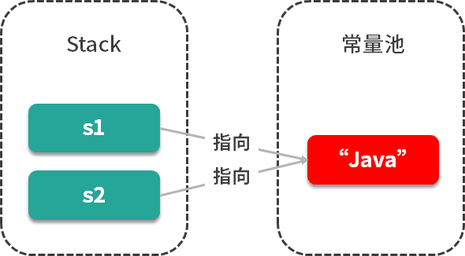
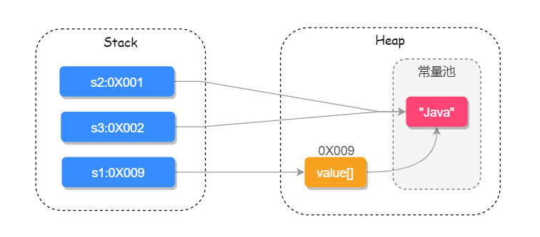

String 是如何实现的？它有哪些重要的方法？
存储结构
以主流的 JDK 版本 1.8 来说，String 内部实际存储结构为 char 数组，源码如下：
public final class String
implements java.io.Serializable, Comparable<String>, CharSequence {
// 用于存储字符串的值
private final char value[];
// 缓存字符串的 hash code
private int hash; // Default to 0
// ......其他内容
}
String 源码中包含下面几个重要的方法。
1. 多构造方法
String 字符串有以下 4 个重要的构造方法：
// String 为参数的构造方法
public String(String original) {
this.value = original.value;
this.hash = original.hash;
}
// char[] 为参数构造方法
public String(char value[]) {
this.value = Arrays.copyOf(value, value.length);
}
// StringBuffer 为参数的构造方法
public String(StringBuffer buffer) {
synchronized(buffer) {
this.value = Arrays.copyOf(buffer.getValue(), buffer.length());
}
}
// StringBuilder 为参数的构造方法
public String(StringBuilder builder) {
this.value = Arrays.copyOf(builder.getValue(), builder.length());
}
其中，比较容易被我们忽略的是以 StringBuffer 和 StringBuilder 为参数的构造函数，因为这三种数据类型，我们通常都是单独使用的，所以这个小细节我们需要特别留意一下。
2. equals() 比较两个字符串是否相等
public boolean equals(Object anObject) {
// 对象引用相同直接返回 true
if (this == anObject) {
return true;
}
// 判断需要对比的值是否为 String 类型，如果不是则直接返回 false
if (anObject instanceof String) {
String anotherString = (String)anObject;
int n = value.length;
if (n == anotherString.value.length) {
// 把两个字符串都转换为 char 数组对比
char v1[] = value;
char v2[] = anotherString.value;
int i = 0;
// 循环比对两个字符串的每一个字符
while (n-- != 0) {
// 如果其中有一个字符不相等就 true false，否则继续对比
if (v1[i] != v2[i])
return false;
i++;
}
return true;
}
}
return false;
}
String 类型重写了 Object 中的 equals() 方法，equals() 方法需要传递一个 Object 类型的参数值，在比较时会先通过 instanceof 判断是否为 String 类型，如果不是则会直接返回 false，instanceof 的使用如下：
Object oString = "123";
Object oInt = 123;
System.out.println(oString instanceof String); // 返回 true
System.out.println(oInt instanceof String); // 返回 false
当判断参数为 String 类型之后，会循环对比两个字符串中的每一个字符，当所有字符都相等时返回 true，否则则返回 false。
还有一个和 equals() 比较类似的方法 equalsIgnoreCase()，它是用于忽略字符串的大小写之后进行字符串对比。
3. compareTo() 比较两个字符串
compareTo() 方法用于比较两个字符串，返回的结果为 int 类型的值，源码如下：
public int compareTo(String anotherString) {
int len1 = value.length;
int len2 = anotherString.value.length;
// 获取到两个字符串长度最短的那个 int 值
int lim = Math.min(len1, len2);
char v1[] = value;
char v2[] = anotherString.value;
int k = 0;
// 对比每一个字符
while (k < lim) {
char c1 = v1[k];
char c2 = v2[k];
if (c1 != c2) {
// 有字符不相等就返回差值
return c1 - c2;
}
k++;
}
return len1 - len2;
}
从源码中可以看出，compareTo() 方法会循环对比所有的字符，当两个字符串中有任意一个字符不相同时，则 return char1-char2。比如，两个字符串分别存储的是 1 和 2，返回的值是 -1；如果存储的是 1 和 1，则返回的值是 0 ，如果存储的是 2 和 1，则返回的值是 1。
还有一个和 compareTo() 比较类似的方法 compareToIgnoreCase()，用于忽略大小写后比较两个字符串。
可以看出 compareTo() 方法和 equals() 方法都是用于比较两个字符串的，但它们有两点不同：
equals() 可以接收一个 Object 类型的参数，而 compareTo() 只能接收一个 String 类型的参数； equals() 返回值为 Boolean，而 compareTo() 的返回值则为 int。 它们都可以用于两个字符串的比较，当 equals() 方法返回 true 时，或者是 compareTo() 方法返回 0 时，则表示两个字符串完全相同。
4. 其他重要方法
indexOf()：查询字符串首次出现的下标位置
lastIndexOf()：查询字符串最后出现的下标位置
contains()：查询字符串中是否包含另一个字符串
toLowerCase()：把字符串全部转换成小写
toUpperCase()：把字符串全部转换成大写
length()：查询字符串的长度
trim()：去掉字符串首尾空格
replace()：替换字符串中的某些字符
split()：把字符串分割并返回字符串数组
join()：把字符串数组转为字符串
考点分析
这道题目考察的重点是，你对 Java 源码的理解，这也从侧面反应了你是否热爱和喜欢专研程序，而这正是一个优秀程序员所必备的特质。
String 源码属于所有源码中最基础、最简单的一个，对 String 源码的理解也反应了你的 Java 基础功底。
String 问题如果再延伸一下，会问到一些更多的知识细节，这也是大厂一贯使用的面试策略，从一个知识点入手然后扩充更多的知识细节，对于 String 也不例外，通常还会关联的询问以下问题：
为什么 String 类型要用 final 修饰？
== 和 equals 的区别是什么？
String 和 StringBuilder、StringBuffer 有什么区别？
String 的 intern() 方法有什么含义？
String 类型在 JVM（Java 虚拟机）中是如何存储的？编译器对 String 做了哪些优化？
接下来我们一起来看这些问题的答案。
知识扩展
1. == 和 equals 的区别
== 对于基本数据类型来说，是用于比较 “值”是否相等的；而对于引用类型来说，是用于比较引用地址是否相同的。
查看源码我们可以知道 Object 中也有 equals() 方法，源码如下：
public boolean equals(Object obj) {
return (this == obj);
}
可以看出，Object 中的 equals() 方法其实就是 ==，而 String 重写了 equals() 方法把它修改成比较两个字符串的值是否相等。
源码如下：
public boolean equals(Object anObject) {
// 对象引用相同直接返回 true
if (this == anObject) {
return true;
}
// 判断需要对比的值是否为 String 类型，如果不是则直接返回 false
if (anObject instanceof String) {
String anotherString = (String)anObject;
int n = value.length;
if (n == anotherString.value.length) {
// 把两个字符串都转换为 char 数组对比
char v1[] = value;
char v2[] = anotherString.value;
int i = 0;
// 循环比对两个字符串的每一个字符
while (n-- != 0) {
// 如果其中有一个字符不相等就 true false，否则继续对比
if (v1[i] != v2[i])
return false;
i++;
}
return true;
}
}
return false;
}
2. final 修饰的好处
从 String 类的源码我们可以看出 String 是被 final 修饰的不可继承类，源码如下：
public final class String
implements java.io.Serializable, Comparable<String>, CharSequence { //...... }
那这样设计有什么好处呢？
Java 语言之父 James Gosling 的回答是，他会更倾向于使用 final，因为它能够缓存结果，当你在传参时不需要考虑谁会修改它的值；如果是可变类的话，则有可能需要重新拷贝出来一个新值进行传参，这样在性能上就会有一定的损失。
James Gosling 还说迫使 String 类设计成不可变的另一个原因是安全，当你在调用其他方法时，比如调用一些系统级操作指令之前，可能会有一系列校验，如果是可变类的话，可能在你校验过后，它的内部的值又被改变了，这样有可能会引起严重的系统崩溃问题，这是迫使 String 类设计成不可变类的一个重要原因。
总结来说，使用 final 修饰的第一个好处是安全；第二个好处是高效，以 JVM 中的字符串常量池来举例，如下两个变量：
String s1 = "java";
String s2 = "java";
只有字符串是不可变时，我们才能实现字符串常量池，字符串常量池可以为我们缓存字符串，提高程序的运行效率，如下图所示： 
3. String 和 StringBuilder、StringBuffer 的区别
因为 String 类型是不可变的，所以在字符串拼接的时候如果使用 String 的话性能会很低，因此我们就需要使用另一个数据类型 StringBuffer，它提供了 append 和 insert 方法可用于字符串的拼接，它使用 synchronized 来保证线程安全，如下源码所示：
@Override
public synchronized StringBuffer append(Object obj) {
toStringCache = null;
super.append(String.valueOf(obj));
return this;
}
@Override
public synchronized StringBuffer append(String str) {
toStringCache = null;
super.append(str);
return this;
}
因为它使用了 synchronized 来保证线程安全，所以性能不是很高，于是在 JDK 1.5 就有了 StringBuilder，它同样提供了 append 和 insert 的拼接方法，但它没有使用 synchronized 来修饰，因此在性能上要优于 StringBuffer，所以在非并发操作的环境下可使用 StringBuilder 来进行字符串拼接。
4. String 和 JVM
String 常见的创建方式有两种，new String() 的方式和直接赋值的方式，直接赋值的方式会先去字符串常量池中查找是否已经有此值，如果有则把引用地址直接指向此值，否则会先在常量池中创建，然后再把引用指向此值；而 new String() 的方式一定会先在堆上创建一个字符串对象，然后再去常量池中查询此字符串的值是否已经存在，如果不存在会先在常量池中创建此字符串，然后把引用的值指向此字符串，如下代码所示：
String s1 = new String("Java");
String s2 = s1.intern();
String s3 = "Java";
System.out.println(s1 == s2); // false
System.out.println(s2 == s3); // true
它们在 JVM 存储的位置，如下图所示：  小贴士：JDK 1.7 之后把永生代换成的元空间，把字符串常量池从方法区移到了 Java 堆上。
除此之外编译器还会对 String 字符串做一些优化，例如以下代码：
String s1 = "Ja" + "va";
String s2 = "Java";
System.out.println(s1 == s2);
虽然 s1 拼接了多个字符串，但对比的结果却是 true，我们使用反编译工具，看到的结果如下：
Compiled from "StringExample.java"
public class com.lagou.interview.StringExample {
public com.lagou.interview.StringExample();
Code:
0: aload_0
1: invokespecial #1 // Method java/lang/Object."<init>":()V
4: return
LineNumberTable:
line 3: 0
public static void main(java.lang.String[]);
Code:
0: ldc #2 // String Java
2: astore_1
3: ldc #2 // String Java
5: astore_2
6: getstatic #3 // Field java/lang/System.out:Ljava/io/PrintStream;
9: aload_1
10: aload_2
11: if_acmpne 18
14: iconst_1
15: goto 19
18: iconst_0
19: invokevirtual #4 // Method java/io/PrintStream.println:(Z)V
22: return
LineNumberTable:
line 5: 0
line 6: 3
line 7: 6
line 8: 22
}
从编译代码 #2 可以看出，代码 "Ja"+"va" 被直接编译成了 "Java" ，因此 s1==s2 的结果才是 true，这就是编译器对字符串优化的结果。
小结
本课时从 String 的源码入手，重点讲了 String 的构造方法、equals() 方法和 compareTo() 方法，其中 equals() 重写了 Object 的 equals() 方法，把引用对比改成了字符串值对比，也介绍了 final 修饰 String 的好处，可以提高效率和增强安全性，同时我们还介绍了 String 和 JVM 的一些执行细节。